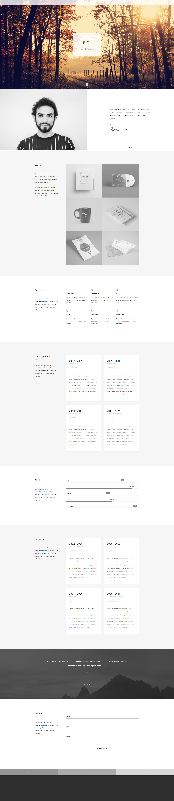

<div id="single-portfolio">
	<div id="portfolio-details" class="container">
		<a class="close-folio-item" href="#"><i class="fa fa-times"></i></a>
		<picture>
			<source srcset="images/portfolio/1.1.webp" type="image/webp">
			
		</picture>

		<div class="row">
			<div class="col-sm-9">
				<div class="project-info">
					<h3>О проекте</h3>
					<p>Проект создавался исключительно для портфолио. Данный сайт
						прекрасно подойдет не только дизайнерам, но и людям других профессий,
						так как он отвечает требованиям мобильности блоков.</p>
					<p>Благодоря встроенной форме обратной связи Вы будете получать заявки от клиентов
						и не будете пропускать потенциальные заказы.
					</p>
				</div>
			</div>
			<div class="col-sm-3">
				<div class="project-details">
					<h3>Детали проекта</h3>
					<p><span>Дата:</span> 06 апреля 2020</p>
					<p><span>Тэги:</span> #Design, #personal</p>
				</div>
			</div>
		</div>
	</div>
</div>